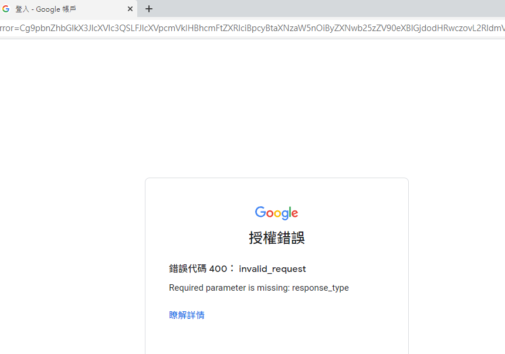
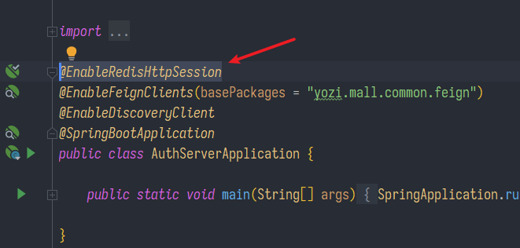
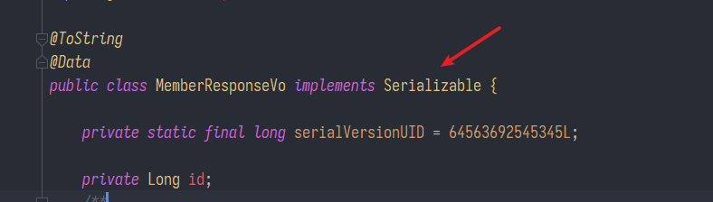
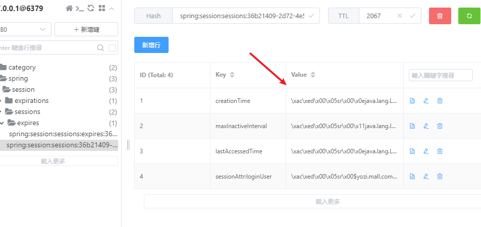
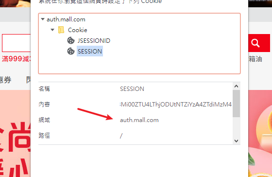
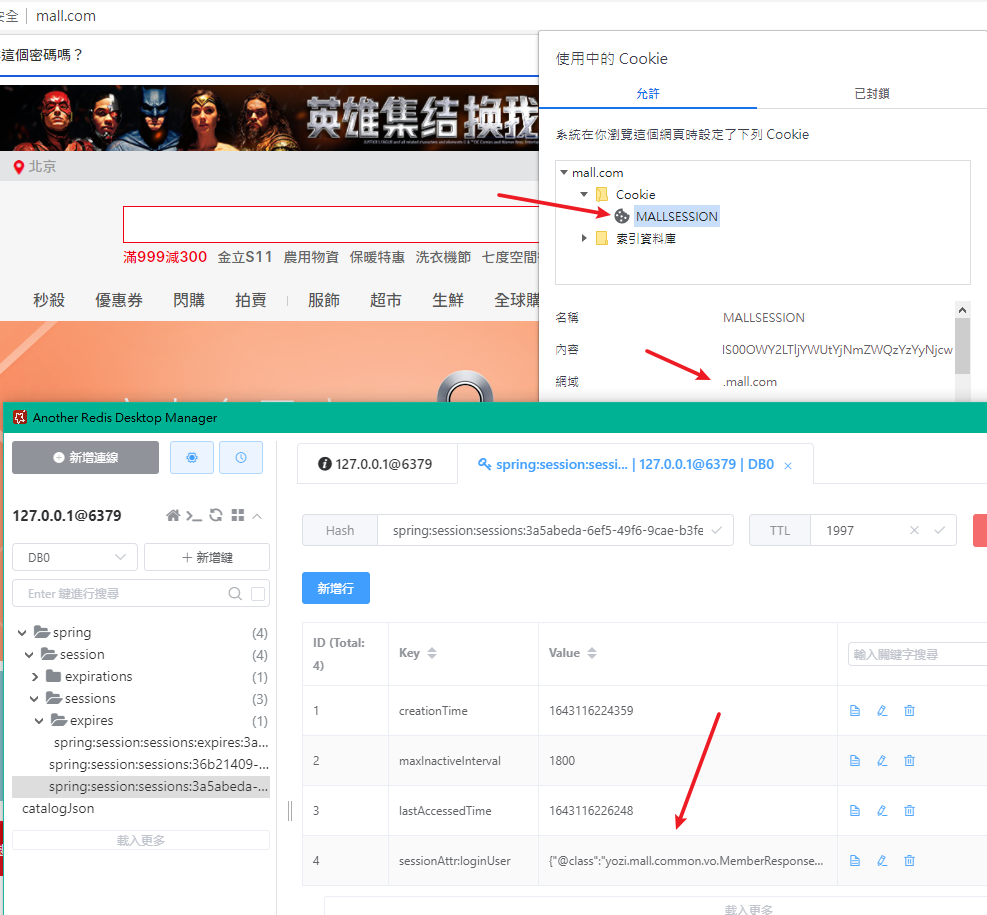
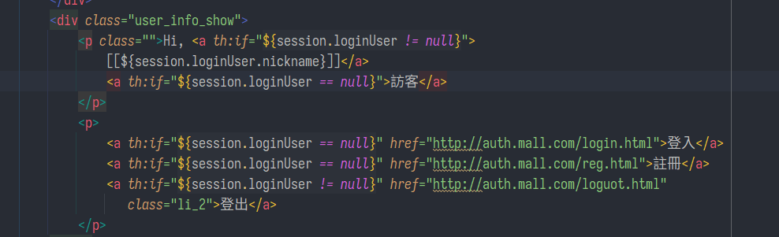
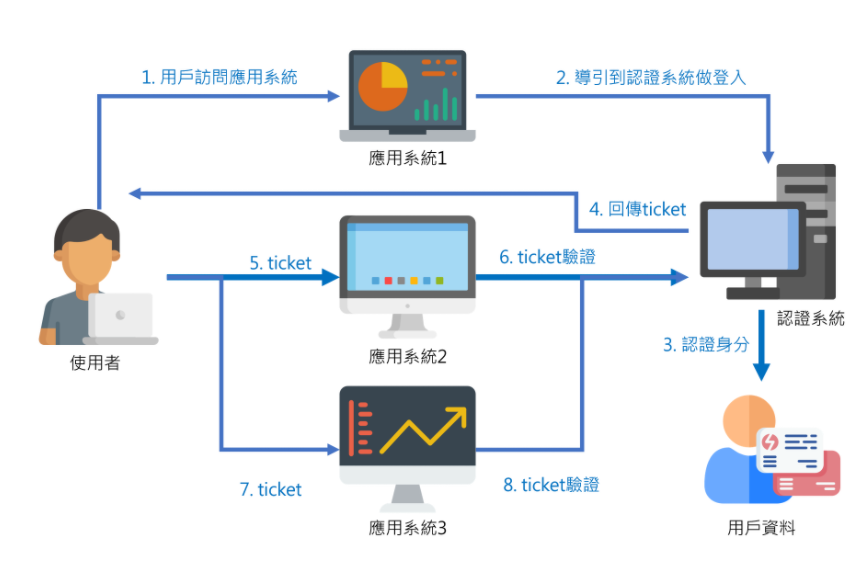

註冊、登入與Spring Session
SpringBoot微服務項目筆記-16
WebMvcConfigurer
參考 https://blog.csdn.net/pan_junbiao/article/details/120039885
- 複習SpringMVC
- WebMvcConfigurer是一個接口，用JavaBean的方式代替web.xml，常用於:
- 攔截器，例如:
@Override
public void addInterceptors(InterceptorRegistry registry) {
super.addInterceptors(registry);
registry.addInterceptor(new TestInterceptor()).addPathPatterns("/**").excludePathPatterns("/emp/toLogin","/emp/login","/js/**","/css/**","/images/**");
}
- 跨域設定，例如:
// 跨域
@Override
public void addCorsMappings(CorsRegistry registry) {
registry.addMapping("/**")
.allowedOrigins("*") //浏览器允许所有的域访问 / 注意 * 不能满足带有cookie的访问,Origin 必须是全匹配
.allowCredentials(true) // 允许带cookie访问
.allowedMethods("GET", "POST", "PUT", "DELETE", "OPTIONS")
.allowedHeaders("token")
.maxAge(3600);
}
- 映射html頁面
- 前後綴一樣由thymeleaf加上
@Configuration
public class MallWebConfig implements WebMvcConfigurer {
// View映射，省下造controller一個一個設定
@Override
public void addViewControllers(ViewControllerRegistry registry) {
registry.addViewController("/").setViewName("login");
registry.addViewController("/login.html").setViewName("login");
registry.addViewController("/reg.html").setViewName("reg");
}
}
/* 相當於
@GetMapping(value = "/login.html")
public String loginPage() {
return "login";
}
註冊
- LoginController.java
// 註冊
@PostMapping(value = "/register")
public String register(@Valid UserRegisterVo vos, BindingResult result, RedirectAttributes attributes) {
// 如果有錯誤回到註冊頁面
if (result.hasErrors()) {
Map<String, String> errors =
result.getFieldErrors().stream().collect(Collectors.toMap(FieldError::getField,
FieldError::getDefaultMessage));
attributes.addAttribute("errors", errors);
return "redirect:http://auth.mall.com/reg.html";
}
// 前端驗證被繞過，若傳空值讓他返回
if (vos.getPassword().isEmpty() || vos.getCode().isEmpty() || vos.getUserName().isEmpty() || vos.getPhone().isEmpty()) {
return "redirect:http://auth.mall.com/reg.html";
}
// 獲取驗證碼
String code = vos.getCode();
//驗證碼通過，真正註冊，調用遠程服務進行註冊會員
if (code.equals("1234")) {
R register = memberFeignService.register(vos);
if (register.getCode() == 0) {
//成功
return "redirect:http://auth.mall.com/login.html";
} else {
//失敗
Map<String, String> errors = new HashMap<>();
errors.put("msg", register.getData("msg", new TypeReference<String>() {
}));
attributes.addFlashAttribute("errors", errors);
return "redirect:http://auth.mall.com/reg.html";
}
} else {
//驗證碼錯誤
Map<String, String> errors = new HashMap<>();
errors.put("code", "驗證碼錯誤");
attributes.addFlashAttribute("errors", errors);
return "redirect:http://auth.mall.com/reg.html";
}
}
-
知識點:
-
用拋出異常的方式告知是否重複註冊
-
用MD5加鹽加密，好處:
- 快速、抗改(雪崩效應，只要有原始資料任何變化算出的MD5都會天差地別)、不可逆
- 但是可以暴力破解，所以要加鹽
-
-
MemberController.java
@PostMapping(value = "/register")
public R register(@RequestBody MemberUserRegisterVo vo) {
try {
memberService.register(vo);
} catch (PhoneException e) {
return R.error(BizCodeEnum.PHONE_EXIST_EXCEPTION.getCode(), BizCodeEnum.PHONE_EXIST_EXCEPTION.getMessage());
} catch (UsernameException e) {
return R.error(BizCodeEnum.USER_EXIST_EXCEPTION.getCode(), BizCodeEnum.USER_EXIST_EXCEPTION.getMessage());
}
return R.ok();
}
- MemberServiceImpl.java
- Spring的BCryptPasswordEncoder已經自動加鹽了
@Override
public void register(MemberUserRegisterVo vo) {
MemberEntity memberEntity = new MemberEntity();
// 設置等級為普通會員
MemberLevelEntity levelEntity = memberLevelDao.getDefaultLevel();
memberEntity.setLevelId(levelEntity.getId());
// 檢查用戶名和手機號是否唯一，可能拋出異常
checkPhoneUnique(vo.getPhone());
checkUserNameUnique(vo.getUserName());
// 設定帳號密碼
memberEntity.setNickname(vo.getUserName());
memberEntity.setUsername(vo.getUserName());
// 密碼進行MD5加密
BCryptPasswordEncoder bCryptPasswordEncoder = new BCryptPasswordEncoder();
String encode = bCryptPasswordEncoder.encode(vo.getPassword());
memberEntity.setPassword(encode);
memberEntity.setMobile(vo.getPhone());
memberEntity.setGender(0);
// memberEntity.setCreateTime(new Date());
// 保存
baseMapper.insert(memberEntity);
}
@Override
public void checkPhoneUnique(String phone) throws PhoneException {
Long phoneCount = baseMapper.selectCount(new QueryWrapper<MemberEntity>().eq("mobile", phone));
if (phoneCount > 0) {
throw new PhoneException();
}
}
@Override
public void checkUserNameUnique(String userName) throws UsernameException {
Long usernameCount = baseMapper.selectCount(new QueryWrapper<MemberEntity>().eq("username", userName));
if (usernameCount > 0) {
throw new UsernameException();
}
}
知識點
addAttribute與addFlashAttribute的區別
attr.addAttribute(“param”, value);
- 這種方式就相當於重定向之後，在url後面拼接參數，這樣在重定向之後的頁面或者控制器再去獲取url後面的參數就可以了，但這個方式因為是在url後面添加參數的方式，所以暴露了參數，有風險
attr.addFlashAttribute(“param”, value);
- 這種方式也能達到重新向帶參，而且能隱藏參數，其原理就是放到session中，session在跳到頁面后馬上移除對象
登入
- LoginController.java
AuthServerConstant.LOGIN_USER其實就是"loginUser"，放成常數是為了避免使用魔法值
@PostMapping(value = "/login")
public String login(UserLoginVo vo, RedirectAttributes attributes, HttpSession session) {
// 遠程調用member的驗證帳號密碼服務
R login = memberFeignService.login(vo);
if (login.getCode() == 0) {
MemberResponseVo data = login.getData("data", new TypeReference<MemberResponseVo>() {
});
System.out.println("用戶"+data.getUsername()+"登入成功");
session.setAttribute(AuthServerConstant.LOGIN_USER, data);
return "redirect:http://mall.com";
} else {
Map<String, String> errors = new HashMap<>();
errors.put("msg", login.getData("msg", new TypeReference<String>() {
}));
attributes.addFlashAttribute("errors", errors);
return "redirect:http://auth.mall.com/login.html";
}
}
- 驗證帳號密碼很簡單就不貼了，接著主要處理Session的問題
第三方登入
- 第三方登入我自己用google試了都不成功，主要卡在不知道request網址到底該怎寫

- 搜教學比較多是用spring security，照教學能造一個新的Login頁面，結合起來搞半天都失敗，唉先跳過吧
session共享問題
-
子網域、分散式服務用傳統session應付不來，有幾種可選方案
-
session複製，每一個session都複製到所有webserver中，Tomcat修改配置文件就能辦到
- 缺點: 佔用多
-
客户端存儲，保存在cookie中
- 缺點: 安全隱患(篡改)、網絡流量、cookie長度限制
-
hash一致性，例如拿客户端IP來計算，算出來一樣就負載均衡分到指定的伺服器
- 缺點: 水平擴展會引發session失效
-
統一存儲，例如把session存到redis
- 缺點: redis還是比記憶體慢，多增溝通消耗，但問題不大
Spring Session
官方 https://docs.spring.io/spring-session/reference/samples.html
- Spring都幫你想好了，引包吧
<dependency>
<groupId>org.springframework.session</groupId>
<artifactId>spring-session-data-redis</artifactId>
<version>2.6.1</version>
</dependency>
- application.properties
- 還可以設定過期時間等等，預設是30m
spring.session.store-type=redis
# 當然還要設定redis所在
spring.redis.host=localhost
spring.redis.port=6379
- 到啟動類註解
@EnableRedisHttpSession

- 將要存進session的bean序列化

編碼問題
- 這樣一來存是能存了，然而是編成二進制類型，顯然不好用，應該改成JSON

作用域問題
- 預設的session是根據當前域(在auth伺服器)存的，當回到主網域或轉到其他子網域就用不了

一起解決
- MallSessionConfig.java
@Configuration
public class MallSessionConfig {
@Bean
public CookieSerializer cookieSerializer() {
DefaultCookieSerializer cookieSerializer = new DefaultCookieSerializer();
// 放大作用域
cookieSerializer.setDomainName("mall.com");
// 自訂名稱
cookieSerializer.setCookieName("MALLSESSION");
cookieSerializer.setCookieMaxAge(60 * 60 * 24 * 7);
return cookieSerializer;
}
// 整成JSON格式
@Bean
public RedisSerializer<Object> springSessionDefaultRedisSerializer() {
return new GenericJackson2JsonRedisSerializer();
}
}
- 成功!

核心原理
裝飾者模式，就像鋼鐵人穿上反浩克裝甲，有額外增強但仍然保留原始功能
@EnablcRedisHttpSession導入RedisHttpSessionConfiguration配置類，在這個配置類中有SessionRepositoryFilter過濾器- 原始的http請求request和響應response經過濾器放行後，變成了
SessionRepositoryRequestWrapper與SessionRepositoryResponseWrapper - 之後我們操作session其實就是操作這些Wrapper，而Wrapper把原始的session方法都重寫(加料)了，例如RedisHttpSession的
.getSession()方法就是去redis找東西 - Spring Session已經考慮過各種缺點，只要瀏覽器不關，會給redis中的session自動延期
完善登入功能
- 添加Spring Session依賴、做好設定，現在Product模組、Search模組也都可以調用共享的session了
- 修改前端頁面，依據session判斷是否已登入

- LoginController.java
- 已經登入的人還想登入就讓它跳轉
- 要把之前設定的View映射關掉
/**
* 判斷session是否有loginUser，沒有就跳轉登錄頁面，有就跳轉首頁
*/
@GetMapping(value = "/login.html")
public String loginPage(HttpSession session) {
// 從session先取出來用戶的信息，判斷用戶是否已經登錄過了
Object attribute = session.getAttribute(AuthServerConstant.LOGIN_USER);
// 如果用戶沒登錄那就跳轉到登錄頁面
if (attribute == null) {
return "login";
} else {
return "redirect:http://mall.com";
}
}
// 登出
@GetMapping(value = "/loguot.html")
public String logout(HttpServletRequest request) {
request.getSession().removeAttribute(AuthServerConstant.LOGIN_USER);
request.getSession().invalidate();
return "redirect:http://mall.com";
}
單點登入
Single Sign On，簡稱SSO
- 用在不同域名，原理是有一個中央認證系統專門處理登入

- 有很多實現方式，比較常見是用Token
- 暫時應該是用不上，就只先了解一下，有需要再回來補
- https://www.bilibili.com/video/BV1np4y1C7Yf?p=233
上次修改於 2022-02-02